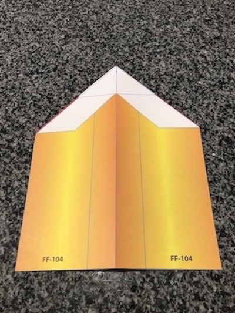
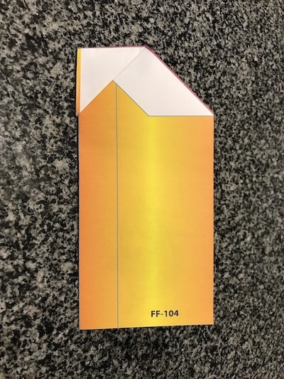
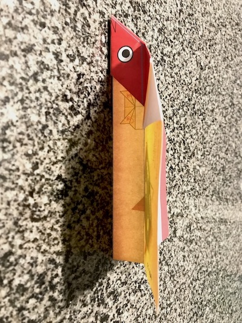

| Materials |
|---|
| 6" by 7 3/4" origami paper |
| Pair of hands |
| Flat surface |
| Step One | Step Two | Step Three |
|---|---|---|
|

- Fold paper in half and unfold. |

- Fold the top point down to bottom of corner folds. |

- Fold the left corner down to the base. Repeat on other side. |